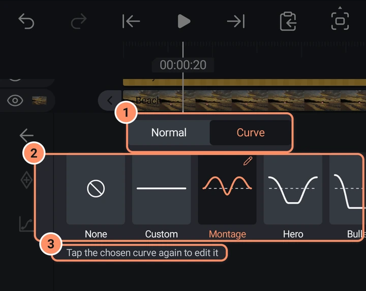
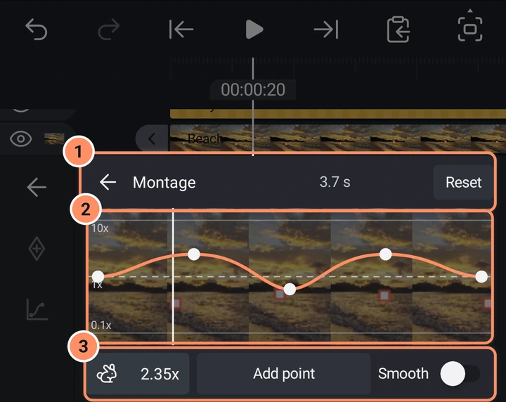
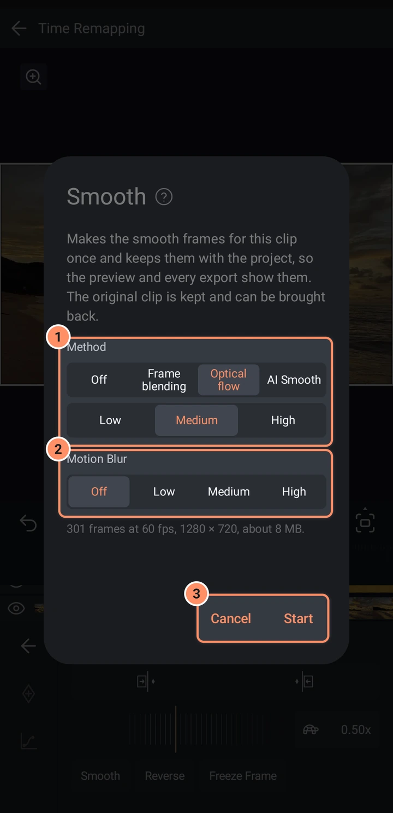

Zdjęcia, wideo i prędkość
Dodawaj zdjęcia i wideo, zmieniaj ich prędkość suwakiem albo krzywą, odwracaj klip, zatrzymuj klatkę i utrzymuj duże wideo płynne.
Na tej stronie
Dodawanie zdjęć i wideo
Otwórz kartę Multimedia w menu Dodaj i dotknij obrazu albo wideo. Zostanie dodany na głowicy odtwarzania i dopasowany do obszaru roboczego, z uwzględnieniem obrotu pliku. Wideo trwa tyle, ile plik. Możesz też użyć Kamery na tej samej karcie, aby nagrać nowe ujęcia.
Zdjęcia i wideo to prostokąty z wypełnieniem obrazem, więc działają na nich wszystkie narzędzia kształtów: Przekształcenie, Obramowanie i cień, Krycie, efekty i tak dalej.
Domyślnie aplikacja zachowuje kopię dodanych multimediów w projekcie (ustawienie Zachowaj kopię importowanych multimediów w projekcie). Pliki większe niż 32 MB pokazują „Kopiowanie ... do projektu...”, gdy kopia się tworzy. Jeśli brakuje wolnego miejsca, projekt nadal używa oryginalnego pliku.
Aby dopasować zdjęcie do obszaru roboczego, użyj menu warstwy: Dopasuj do obszaru roboczego pokazuje całe zdjęcie, Wypełnij obszar roboczy pokrywa obszar roboczy i przycina krawędzie, a Rozciągnij do obszaru roboczego rozciąga je dokładnie do wymiarów. Zobacz Menu warstwy i wielokrotne zaznaczanie.

Informacje o multimediach i zamiana pliku
Informacje o multimediach w menu warstwy pokazują nazwę pliku, wymiary, liczbę klatek na sekundę, czas trwania, format i rozmiar. Zamień plik multimedialny otwiera selektor zdjęć i zastępuje ten plik we wszystkich warstwach projektu, które go używają. W ten sposób naprawiasz warstwę, której plik zniknął.
Prędkość
Zaznacz klip wideo albo dźwiękowy i dotknij Prędkość (pierwszy mały przycisk siatki narzędzi). Otwiera się panel Zmiana tempa. Ma dwie karty na górze: Zwykły i Krzywa. Otwiera się na Krzywej, gdy klip ma już krzywą prędkości.
Zwykły
- Przyciski na górze ustawiają początek albo koniec klipu na głowicy odtwarzania bez przycinania wideo: prędkość zmienia się tak, że ta sama część wideo mieści się w nowej długości. Pokazywane są tylko przyciski pasujące do miejsca głowicy: Wydłuż początek do głowicy odtwarzania przed klipem, Przytnij początek i Przytnij koniec wewnątrz niego, Wydłuż koniec do głowicy odtwarzania za nim.
- Linijka ustawia jedną prędkość dla całego klipu, od 0.05x do 100x. Przeciągnij ją w bok; przy 1x zatrzaskuje się.
- Pole obok linijki pokazuje prędkość i mały obrazek, który się zmienia: ślimaka, żółwia, idącą osobę, królika, konia i na górze geparda. Dotknij pola, aby wpisać dokładną wartość.
- Pod linijką są przyciski Wygładź, Odwróć i Zatrzymaj klatkę. Są opisane poniżej.

Gdy klip ma krzywą, linijka pokazuje jej średnią prędkość. Zmiana jej sprawia, że cała krzywa jest szybsza lub wolniejsza, a jej kształt zostaje.
Dźwięk klipu podąża za jego prędkością, więc jego wysokość tonu się zmienia.
Krzywa
Karta Krzywa zmienia prędkość w czasie, na przykład by zwolnić tylko najlepszy moment. Rząd kafelków przewija się w bok. Dotknij kafelka, aby zastosować go do całego klipu.
| Kafelek | Co robi |
|---|---|
| Brak | Usuwa krzywą: klip znów odtwarza się ze stałą prędkością 1x |
| Niestandardowy | Płaska krzywa 1x do własnego ukształtowania; od razu otwiera edytor |
| Montaż | 1x, 2.5x, 0.6x, 2.5x, 1x |
| Bohater | Szybko na obu końcach, wolno (0.3x) w środku |
| Pocisk | Jeszcze szybciej na obu końcach (3x), bardzo wolno (0.2x) w środku |
| Cięcie skokowe | 1x, z szpilką do 4x w środku |
| Rozbłysk na wejściu | Zaczyna od 4x i zwalnia do 1x |
| Rozbłysk na wyjściu | Zostaje na 1x, a potem przyspiesza do 4x na końcu |

Dotknij wybranego kafelka ponownie, aby edytować jego krzywą. Edytor pokazuje obrazy klipu z krzywą nad nimi, między 0.1x a 10x, z przerywaną linią na 1x.
- Przesuwanie punktu. Dotknij punktu i przeciągnij go. Góra i dół zmieniają jego prędkość, a prędkość zatrzaskuje się na 1x i daje mały znacznik. W bok zmienia jego miejsce w klipie. Dotknięcie lub przeciągnięcie pustego wykresu zamiast tego przesuwa głowicę odtwarzania po klipie.
- Dodaj punkt stawia nowy punkt na głowicy odtwarzania, do dziesięciu łącznie. Gdy punkt jest zaznaczony, przycisk zmienia się w Usuń punkt. Pierwszego i ostatniego punktu nie można usunąć.
- Pole w lewym dolnym rogu pokazuje prędkość zaznaczonego punktu albo prędkość na głowicy, gdy żaden nie jest zaznaczony. Dotknij go, aby wpisać wartość.
- Górny pasek pokazuje w środku długość klipu. Podczas przeciągania pokazuje starą i nową długość, na przykład „3.7 s → 4.2 s”, a zmiana zostaje zastosowana, gdy puścisz.
- Resetuj przywraca krzywą, którą otworzyłeś (płaska 1x dla Niestandardowy). Strzałka w lewym górnym rogu zamyka edytor.
- Wygładź to tutaj przełącznik: to to samo co przycisk Wygładź.

Odwróć
Odwróć odtwarza klip wideo wstecz, obraz i dźwięk. Aplikacja tworzy odwróconą kopię klipu, więc długi klip chwilę to trwa: pole pokazuje Odwracanie i pozostały czas, a Anuluj to zatrzymuje. Odwrócony klip ma przycisk podświetlony na pomarańczowo; dotknij Odwróć ponownie, aby wrócić do oryginału. Ten sam przycisk jest na drugiej stronie siatki narzędzi wideo. Klip z Wygładź albo Ulepsz musi je najpierw stracić: aplikacja pisze „Usuń Wygładź i Ulepsz z tego klipu, zanim go odwrócisz”.

Zatrzymaj klatkę
Zatrzymaj klatkę (gdy głowica jest wewnątrz klipu) pyta o Sekundy do wstrzymania (od 0.1 do 30) i zatrzymuje obraz na głowicy odtwarzania.
Duże wideo i podgląd
Wideo większe niż 1920 x 1080 albo takie, w którym są więcej niż dwie sekundy między wewnętrznymi klatkami kluczowymi, przewija się wolno. Domyślnie AbsentMotion tworzy w tle mniejszą kopię (cienka linia wzdłuż paska pokazuje postęp) i używa jej do podglądu oraz miniatur. Eksporty zawsze czytają oryginalny plik. Możesz to wyłączyć albo wyczyścić kopie w Ustawieniach.
Wyodrębnij dźwięk z wideo
Wyodrębnij dźwięk w menu warstwy tworzy warstwę dźwiękową z dźwięku wideo i wycisza wideo. Nowa warstwa zachowuje czas, prędkość, głośność i efekty dźwiękowe wideo. Zobacz Dźwięk.
Usuń tło
Narzędzia AI potrafią wyciąć tło ze zdjęcia lub wideo i zredukować szum w nagraniu. Działają na telefonie. Zobacz Narzędzia AI.
Wygładzanie klipu
Wygładź to pierwszy przycisk pod linijką w panelu Prędkość klipu wideo (oraz przełącznik w edytorze krzywej). Tworzy klatki pośrednie dla tego klipu raz i zachowuje je razem z projektem, więc podgląd i każdy eksport pokazują gładką wersję. To najlepszy sposób, by zwolnione ujęcia wyglądały płynnie: klip 30 fps w połowie prędkości dostaje nowe klatki między prawdziwymi, zamiast pokazywać każdą klatkę dwa razy.
- Zaznacz klip wideo i otwórz Prędkość.
- Dotknij Wygładź, potem wybierz Mieszanie klatek, Przepływ optyczny albo Wygładzanie AI i poziom (Niska, Średnia, Wysoka), a opcjonalnie Rozmycie ruchu. Wygładzanie AI pobiera swój model raz i pokazuje, ile powinno to trwać na tym telefonie (zobacz Narzędzia AI).
- Poczekaj, aż się skończy. Możesz anulować w każdej chwili i nic się nie zmieni.

Oryginalny klip jest zachowany: klip pokazuje wiersz Wygładź z przyciskiem przywracania, który przywraca oryginał, i Cofnij też działa. Ponowne wygładzanie zawsze zaczyna od oryginału. Przetwarzana jest tylko przycięta część klipu. Dźwięk klipu zostaje bez zmian.
Płynniejszy ruch przy eksporcie
Jeśli Twoje klipy wideo mają mniejszą liczbę klatek niż eksport, ekran eksportu może też dodać klatki pośrednie i rozmycie ruchu do całego wideo. Zobacz Interpolację klatek i Rozmycie ruchu na stronie Eksport.